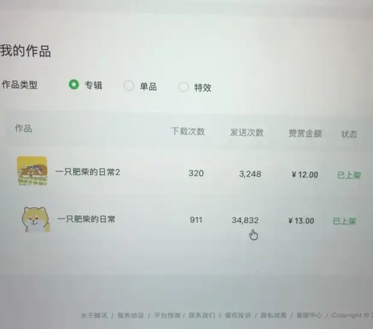
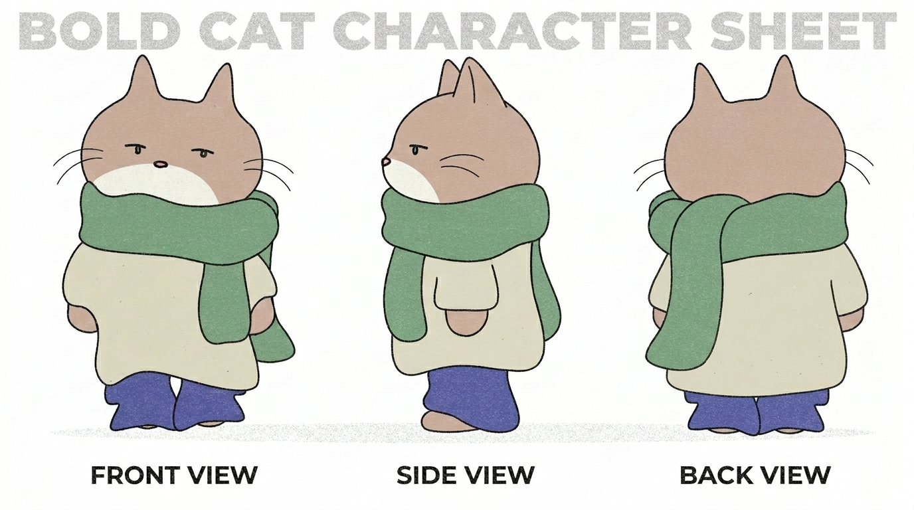
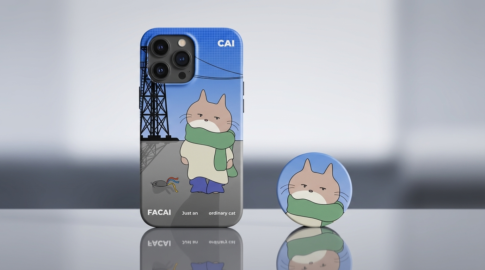
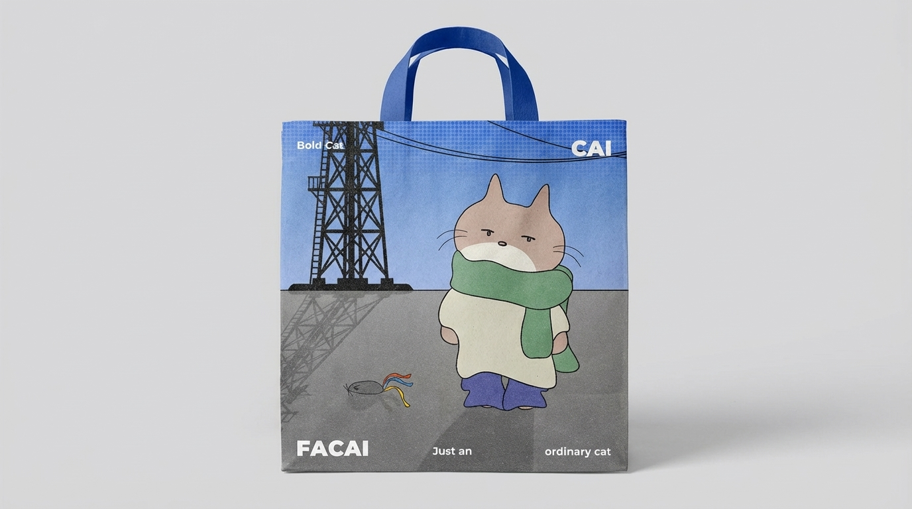

一只肥柴的日常 2
更松弛、更怪一点：通过姿势、道具与表情制造聊天语境里的反差梗。
320 下载 · 3,248 发送我喜欢把角色做成会被人使用的东西：表情包、场景插画、角色延展，以及可以进入产品的视觉角色。
为角色 / 表情包项目整理的轻量作品集。重点不是“画过什么”，而是角色如何产生动作、情境、梗和实际使用。
两套原创柴犬表情均已正式上线微信表情开放平台。第二套更强调动作、荒诞感和角色演技；第一套则建立了更稳定的角色识别与日常使用场景。


两套表情累计 38,080 次发送。对我来说，角色设计最有意思的部分，是它最终能进入人的真实交流。
除了微信红包封面等场景化延展，我也会继续做角色三视图、物件应用与周边视觉。重点是让角色离开单张插画以后，仍然保持性格和识别。

正 / 侧 / 背三视图，稳定角色结构与比例。

把角色放入真实物件，测试识别与构图适配。

角色视觉延展到周边与生活产品。
我的实践从视觉设计延伸到 UI/UX、交互原型、前端与 AI 产品。这让我在做 IP 时，会自然考虑角色进入 App、工具与长期用户体验之后会发生什么。
个人空间记忆地图：地点、路线、照片、统计与回访，并把生活数据组织成可供 AI 读取的 Memory API / MCP。
个人 AI 工作台，围绕 Chat / Read、文件、上下文边界、多模型与长期使用体验持续迭代。
地图 + 日历 + 回访 + AI 检索的情绪记录产品实验，关注个人数据、信息边界与可持续的回看体验。
我从视觉与插画出发，后来一路把实践范围扩展到 UI/UX、交互和 AI 产品。做角色时，我更关心的不是单张图有多“精致”，而是它怎么说话、怎么反应、怎么形成梗、怎么被放进产品里继续活下去。